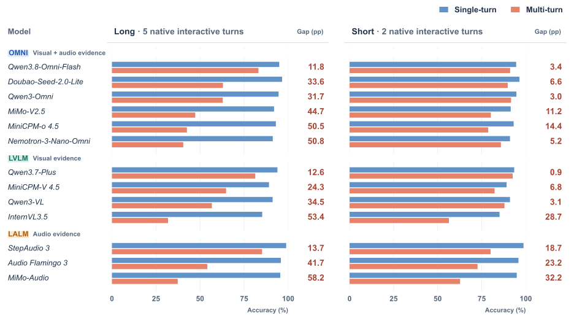

01 / Selective history use
Keep what matters.
Leave interference behind.
LEFT · TASK-CARRYING HISTORYAn outdated answer persists
The earlier clothing-color question must be applied to the new clip. The model repeats “White,” although the correct answer is “Black.” It should retain the historical question but update its answer using current evidence.
RIGHT · EVIDENCE-CARRYING HISTORYCurrent evidence takes over
The current question targets the first clip, whose answer is “Fish.” The model instead answers “Dog” from the newer clip. The question is explicit; the challenge is selecting historical evidence despite a competing current observation.
Selective history use means retaining the relevant question or evidence, while resisting information that conflicts with the intended target.

To assess selective history use, ReTurn varies historical agreement on the task side and current-media competition on the evidence side.
Task-carrying history
Historical question → Current evidence
Evidence-carrying history
Current question → Historical evidence
Within each pair, the target question, media, and answer remain fixed. Each task also has a direct Single-turn counterpart.
Answerable in isolation.
Harder in conversation.
Median OpenQA accuracy
Across 13 models · Short + Long pooled · Test
Single-turn vs. Multi-turn
OpenQA · Long and Short shown separately


| Model | Family | Long ↑ | Δconv ↓ | Short ↑ | Δconv ↓ |
|---|---|---|---|---|---|
| Qwen3.8-Omni-Flash | OMNI | 83.2 | 11.8 | 91.1 | 3.4 |
| Doubao-Seed-2.0-Lite | OMNI | 63.0 | 33.6 | 89.8 | 6.6 |
| Qwen3-Omni | OMNI | 62.9 | 31.7 | 91.6 | 3.0 |
| MiMo-V2.5 | OMNI | 47.3 | 44.7 | 80.2 | 11.2 |
| MiniCPM-o 4.5 | OMNI | 42.6 | 50.5 | 78.7 | 14.4 |
| Nemotron-3-Nano-Omni | OMNI | 40.5 | 50.8 | 85.9 | 5.2 |
| Qwen3.7-Plus | LVLM | 81.4 | 12.6 | 92.6 | 0.9 |
| MiniCPM-V 4.5 | LVLM | 64.8 | 24.3 | 82.3 | 6.8 |
| Qwen3-VL | LVLM | 56.7 | 34.5 | 87.9 | 3.1 |
| InternVL3.5 | LVLM | 31.8 | 53.4 | 56.4 | 28.7 |
| StepAudio 3 | LALM | 85.2 | 13.7 | 80.0 | 18.7 |
| Audio Flamingo 3 | LALM | 54.2 | 41.7 | 72.6 | 23.2 |
| MiMo-Audio | LALM | 37.4 | 58.2 | 62.7 | 32.2 |
| Model | Family | Long ↑ | Δconv ↓ | Short ↑ | Δconv ↓ |
|---|---|---|---|---|---|
| Qwen3.8-Omni-Flash | OMNI | 90.2 | 8.6 | 93.4 | 5.4 |
| Doubao-Seed-2.0-Lite | OMNI | 66.3 | 33.1 | 89.0 | 10.4 |
| Qwen3-Omni | OMNI | 64.9 | 34.3 | 89.7 | 9.4 |
| MiMo-V2.5 | OMNI | 53.2 | 44.2 | 75.9 | 21.7 |
| MiniCPM-o 4.5 | OMNI | 47.8 | 49.8 | 68.4 | 29.2 |
| Nemotron-3-Nano-Omni | OMNI | 58.6 | 39.0 | 78.7 | 19.0 |
| Qwen3.7-Plus | LVLM | 83.7 | 14.4 | 93.5 | 4.7 |
| MiniCPM-V 4.5 | LVLM | 64.6 | 32.1 | 76.4 | 20.7 |
| Qwen3-VL | LVLM | 59.5 | 38.1 | 80.3 | 17.6 |
| InternVL3.5 | LVLM | 58.3 | 36.9 | 70.5 | 24.6 |
| StepAudio 3 | LALM | 81.4 | 18.6 | 84.8 | 15.2 |
| Audio Flamingo 3 | LALM | 55.3 | 44.6 | 65.8 | 34.0 |
| MiMo-Audio | LALM | 34.6 | 63.6 | 49.6 | 48.2 |
Multi-turn accuracy (%), with conversational degradation Δconv = Accsingle − Accmulti in pp. Short / Long contain 2 / 5 media-bearing user turns, including the final turn. Rows retain the same order across interfaces, sorted by Long OpenQA accuracy within each family. Bold marks each family’s best Long score for the selected interface. Results use valid Single-turn/Multi-turn pairs.
From verified seeds
to matched conversations.
Each model generates its own historical replies. Paired Single-turn and Multi-turn evaluation measures conversational degradation across Short and Long horizons, using both OpenQA and MCQ.

Accessing history is only
part of the challenge.
Matched conditions and behavioral probes distinguish access to relevant history from its application and the selection of the intended evidence.

Two controlled contrasts
History access, then conflict resistance.
Task side. Single-turn → Reconfirm introduces a question carried by history. Reconfirm → Reground changes whether the historical answer remains valid, exposing interference from an outdated answer.
Evidence side. Single-turn → Retrieve requires using historical media. Retrieve → Rebind strengthens competition from current media, testing whether the model selects the intended source.
These contrasts motivate two diagnostic questions: can a model access the relevant history, and can it bind the request to the right turn?
01Recall ≠ application
Qwen3.8-Omni-Flash recalls the historical question in 99.8% of separate Reground probes, yet achieves 84.1% task accuracy. Restating the question raises accuracy to 96.4%.
02Competing evidence redirects answers
For Qwen3-Omni, matching the replacement-media answer rises from 0.1% to 36.5% after a Rebind media swap, while target accuracy barely changes.
03Adaptation only partly closes the gap
Qwen3-Omni SFT improves Multi-turn accuracy by 3.42 pp on OpenQA and 2.36 pp on MCQ. Long Rebind remains difficult.
Resources
Read the paper, explore the dataset, or evaluate a model with ReTurn.
Paper
Task design, benchmark results, and behavioral probes of selective history use.
Dataset
80 preview tasks in 40 matched pairs, with an 8-task quick start and source media.
Code & Evaluation
Inference adapters for Omni, LVLM, and LALM, paired scoring, and cached examples.